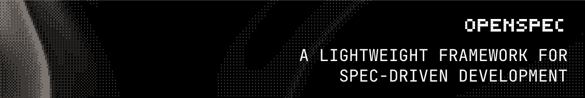
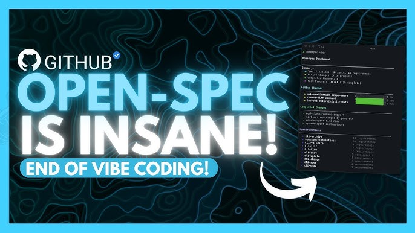
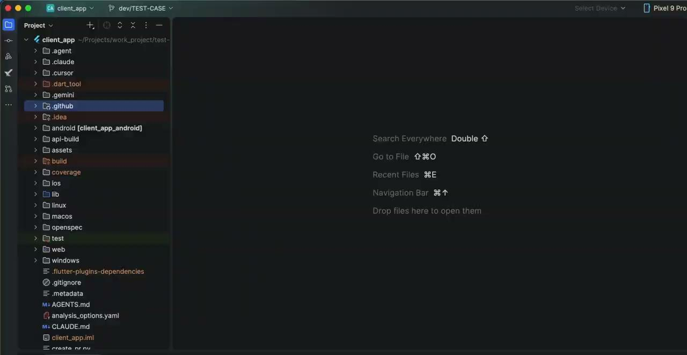
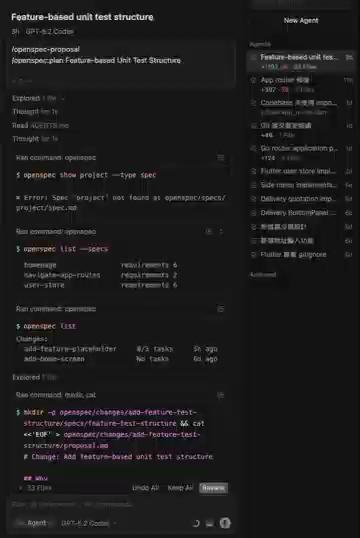

Vibe Coding to SDD
從「憑感覺寫」轉向「規格驅動」的開發流程 · 以 OpenSpec 為核心 A transition workflow from "feeling" to "spec-driven development" using OpenSpec
大綱Outline
這一場我們會走過五個段落，從「為什麼」到「怎麼做」再到「實際看一遍」。 Five sections, from "why" to "how" to a live walkthrough.
- Vibe Coding & SDD — 兩種開發模式的本質差異the essential difference between the two modes
- OpenSpec — 為什麼選它、它的核心架構why we picked it, and the core architecture
- The General Workflow — 四個步驟與兩個關鍵指令four steps and two key commands
- Demo — 現場展示 modify proposal 與 openspec overviewa live walk through modify proposal and openspec overview
- Conclusion — 從 programmer 到 architect 的轉身the shift from programmer to architect
Vibe CodingVibe Coding
Andrej Karpathy：「Vibe Coding 就是憑感覺、追求速度地把 code 趕出來。」 Andrej Karpathy: "Vibe Coding is the act of rushing code based on 'feels' and speed."
- Hallucinations — AI 編出不存在的 APIhallucinated APIs
- Token Waste — 重複試錯燒 tokenrepeated trial-and-error burns tokens
- High Debt — 沒有規格的程式碼難維護undocumented code is hard to maintain
- Lower Coding Barrier — 非工程師也能參與non-engineers can participate
- Fast — 想法到雛形最短路徑shortest path from idea to prototype
- Dissolving Boundaries — 角色界線變模糊role boundaries dissolve
Spec-Driven DevelopmentSpec-Driven Development
寫 spec 不只是文件，是把意圖刻在程式碼之外的單一真實來源。 Writing a spec isn't just docs — it's etching intent into a single source of truth outside the code.
Single Source of Truth
spec 是主紀錄，不是 commit message 或資深工程師的記憶。 The spec is the master record, not commit messages or a senior engineer's memory.
Token Efficiency
AI 只需讀對應 spec，不必掃整個 repo。 AI only needs to read the specific spec file, not the entire repo — saving cost and context space.
Reliability
從「盲猜」變成「照藍圖蓋」，先共識再寫 code。 From "blind guessing" to "building by blueprint." Consensus before code.
Vibe Coding vs. SDDVibe Coding vs. SDD
| 面向Feature | Vibe Coding | SDD |
|---|---|---|
| 角色Role | 藝術家（衝動型）The Artist (Impulsive) | 建築師（嚴謹型）The Architect (Rigorous) |
| 脈絡Context | 低（靠猜）Low (Guesswork) | 高（明確指令）High (Explicit Instructions) |
| 可維護性Maintainability | 低（脆弱，A 修好 B 壞）Low (Fragile — fix A, break B) | 高（歷史可追溯）High (Traceable History) |
| 適用場景Best For | 從零開始、探索Greenfield / Exploration | 既有專案、重構Brownfield / Refactoring |
Why OpenSpec?Why OpenSpec?

三個原因讓我們選 OpenSpec 而不是 Spec Kit。 Three reasons we picked OpenSpec over Spec Kit.
- Brownfield First — 為「既有專案」設計，不像 Spec Kit 常強迫從頭來過。Designed for existing projects, unlike Spec Kit which often forces a restart.
- Zero Friction — 純 Markdown，不需 API key，輕量。Lightweight, no API keys required, purely Markdown-based.
- Agent Agnostic — Cursor、Claude Code、Copilot、Gemini 都能用。Works with Cursor, Claude Code, GitHub Copilot, and Gemini.

Core ArchitectureCore Architecture
專案的 single source of truth。 The project's single source of truth.
包含 delta 檔案（新增 / 修改）與任務清單。 Contains delta files (added / modified) and task lists.
The General WorkflowThe General Workflow
Planning
人類 + AI 腦力激盪，定義 corner cases。 Human + AI brain dump. Defining "corner cases".
Proposal
建立 spec delta。 Create spec delta.
Implement
Agent 執行任務清單。 Agent executes the task list.
Archive
把 delta merge 回 specs。 Merge changes back into specs.
Workflow · ProposalWorkflow · Proposal
openspec proposal
用 delta 格式定義藍圖 — purpose、scope（要做什麼／不做什麼）、user needs、functional + non-functional requirements。會自動產出 proposal.md 和 tasks.md。
Define the blueprint in delta format with purpose, scope (what to do / not to do), user needs, functional and non-functional requirements. Generates proposal.md and tasks.md.
把模糊的需求先丟給 Gemini，請它把 Vibe → SPEC，再把整理過的 prompt 餵給 OpenSpec，命中率會大幅提升。 Hand vague requirements to Gemini first — ask it to turn Vibe → SPEC, then feed the cleaned prompt into OpenSpec. Hit rate goes way up.
Workflow · Apply & ArchiveWorkflow · Apply & Archive
Agent 讀對應的 task list，逐項實作並打勾，降低 context switching 與幻覺。 The agent reads the task list and implements features one by one, checking them off. Reduces context switching and hallucination.
「魔法」步驟 — 把 delta merge 回 specs/，文件隨 code 一起長大。
The "magic" step — merges the delta back into specs/. Documentation grows automatically with your code.
DemoDemo
我們直接打開 moonshot 看一遍：modify proposal、openspec overview。 Let's open moonshot and walk through: modify proposal, openspec overview.


ConclusionConclusion
三個值得帶走的觀念。 Three takeaways.
- 👉🏻 Vibe Coding → SDDFrom Vibe Coding to SDD
- 👉🏻 在 AI 世代成為 10x engineer 的方法How to become a 10x engineer in the AI era
- 👉🏻 從 Programmer 走向 ArchitectFrom Programmer to Architect